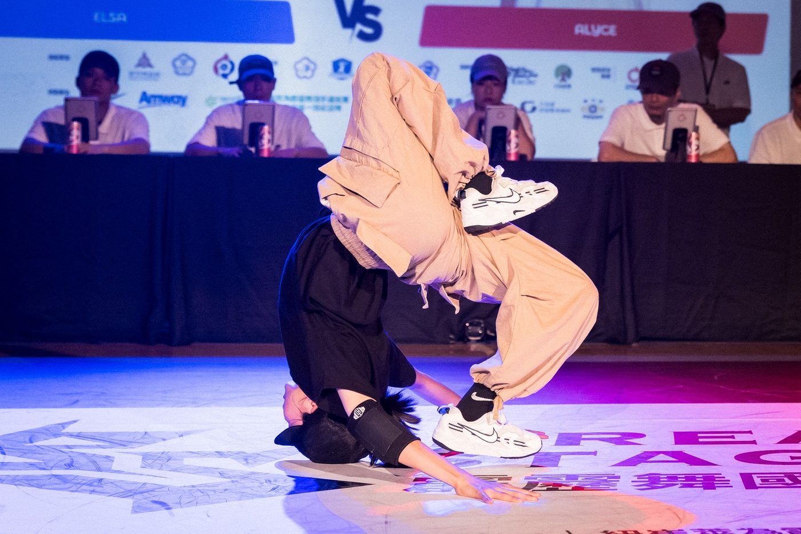
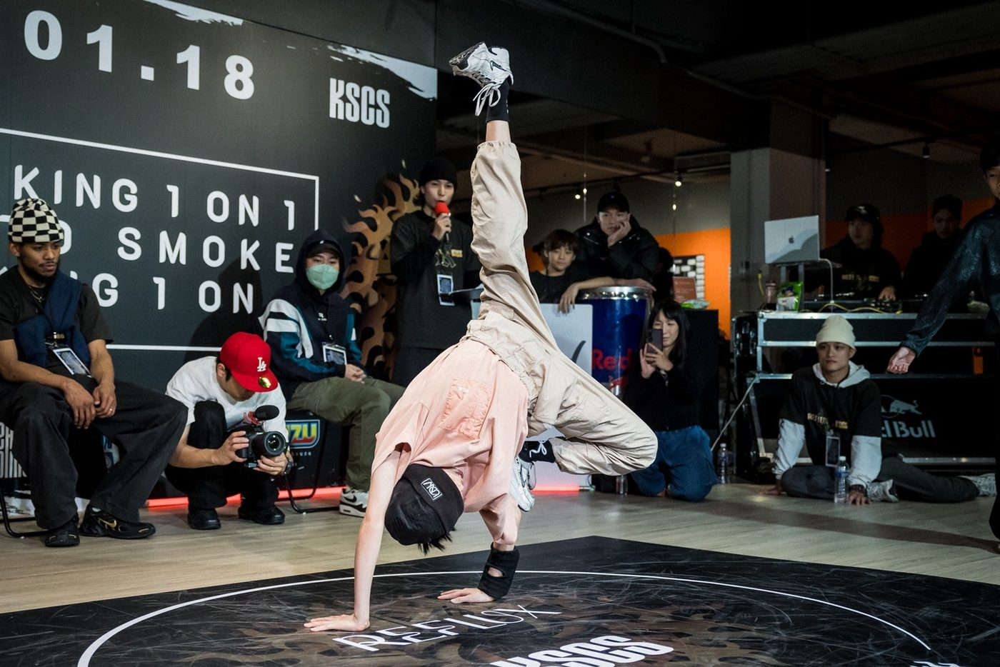
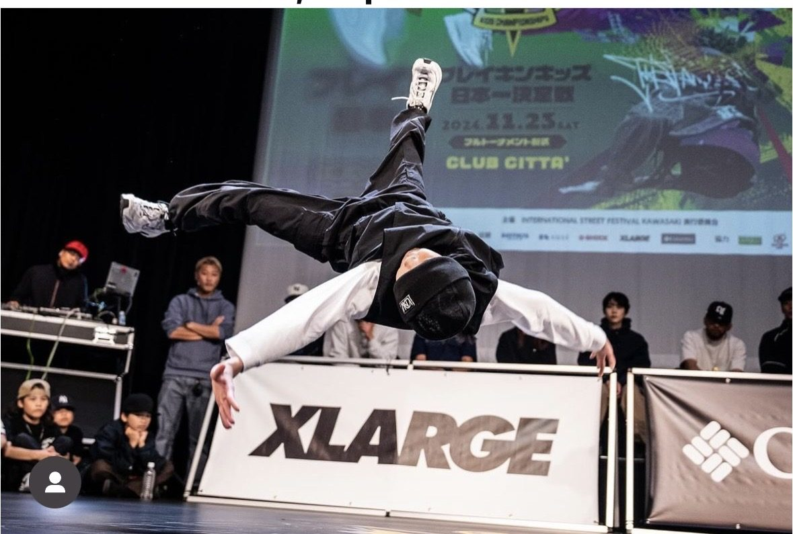
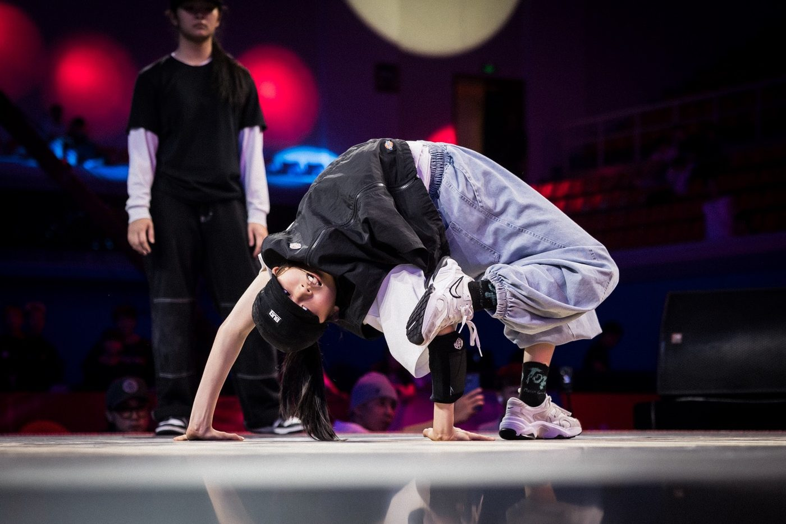

01我的故事
意晴自幼對舞蹈有深厚的興趣，學習舞蹈後更累積多項國內外大小舞蹈賽事，擁有許多舞台經驗、表現力跟極具感染力的風格。
自2021年起接觸霹靂舞，憑著自己的堅持再短短幾年內即在全國霹靂舞國手選拔積分賽事中屢創佳績。
2025年更分別於在霹靂舞青年女子組及青少年女子組雙組別中奪得優異成績，充分展現堅韌與實力。
立志成為台灣奧運霹靂舞國手代表並以台灣Red Bull BC One代表選手為目標。
以熱愛為核心、努力為驅動，邁向世界舞台，為台灣爭光，也讓更多人能夠看見霹靂舞這項充滿力量與創意的運動。
未來將持續在國際舞台累積經驗，精進自我，不斷突破極限。



